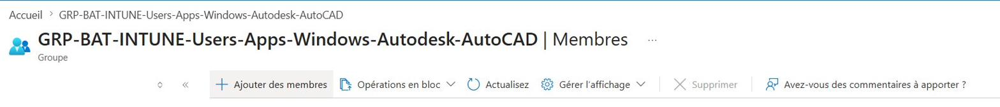
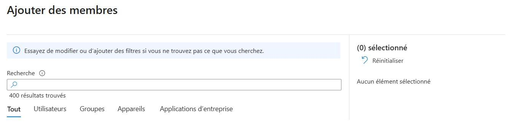

Contexte
Au sein du service informatique de l'agence du Mercantour, la préparation des postes utilisateurs est une mission régulière, déclenchée à chaque nouvelle arrivée ou renouvellement de matériel. L'entreprise a fait le choix d'un parc homogène composé exclusivement de machines HP, dans le cadre d'un accord partenaire qui inclut une pré-personnalisation des postes (intégration Microsoft AutoPilot, image système UNITY).
Mon rôle consiste à finaliser cette préparation à réception du matériel, à configurer le poste en fonction du profil de l'utilisateur final (métier, filiale d'appartenance, applications nécessaires) et à le livrer prêt à l'emploi.
Déroulé technique
La procédure se déroule en plusieurs étapes successives, de la réception du carton à la livraison à l'utilisateur.
Étape 1 — Vérification de l'intégration AutoPilot
Première vérification au démarrage du poste : s'assurer que le numéro de série a bien été enregistré côté Microsoft AutoPilot. Sans cette intégration, le poste ne pourra pas s'enrôler automatiquement dans Entra ID de l'entreprise et la suite de la procédure échouera.
Étape 2 — Connexion au compte professionnel via accès temporaire
Pour initialiser le poste au nom de l'utilisateur final, je me connecte à son compte Microsoft 365 à l'aide d'un droit d'accès temporaire (Temporary Access Pass) généré depuis Azure AD. Ce mécanisme évite de manipuler le mot de passe de l'utilisateur tout en permettant la première authentification et la création du profil Windows.
Étape 3 — Mises à jour système et constructeur
Une fois le profil créé, je lance les mises à jour :
- Windows Update jusqu'à ce qu'aucune mise à jour ne soit en attente ;
- HP Image Assistant (HP IA) pour les pilotes, le firmware et les correctifs constructeur.
Étape 4 — Pack Office et mise à jour
Connexion à la suite Microsoft 365 avec le compte professionnel de l'utilisateur, puis vérification que toutes les applications sont à jour (Outlook, Teams, Word, Excel, PowerPoint, OneDrive).
Étape 5 — Installation des applications métier
L'attribution des logiciels métier passe par Microsoft Azure (Entra ID) : j'ajoute l'utilisateur au groupe correspondant à son profil (par exemple, un architecte sera ajouté au groupe donnant droit à AutoCAD et Revit). Cette appartenance déclenche l'attribution automatique de la licence, et l'utilisateur peut alors télécharger ses applications depuis le Portail Entreprise sur le poste.


Étape 6 — Mappage des lecteurs réseau
Dernière étape avant livraison : l'ajout des lecteurs réseau en fonction de
l'entité d'appartenance de l'utilisateur — par exemple DRTO,
DUMEZ Côte d'Azur, Vinci Construction Monaco… Ces
lecteurs donnent accès aux ressources partagées propres à chaque filiale.
Conclusion
La procédure aboutit à la livraison d'un poste opérationnel, intégré au domaine, conforme aux politiques de sécurité et adapté aux besoins métier de l'utilisateur. La standardisation de la procédure (AutoPilot, image UNITY, groupes Azure) permet un déploiement fiable et reproductible, tout en laissant la marge de personnalisation nécessaire pour chaque profil.
Compétences validées
Cette situation professionnelle valide les compétences suivantes :
Gérer le patrimoine informatique
Recensement, configuration et raccordement du poste aux ressources de la filiale.
Voir la compétence → E4 · 03Mettre à disposition des utilisateurs un service informatique
Déploiement du poste prêt à l'emploi et accompagnement de l'utilisateur.
Voir la compétence → E5 · 02Installer, tester et déployer une solution d'infrastructure réseau
Installation et configuration d'un élément d'infrastructure (poste utilisateur).
Voir la compétence →